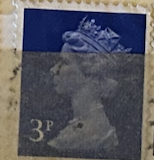
| SOURCE | TITLE| IMAGE MATCH | click to source page |
| eBay | Great Britain - 1999 - E - Queen Elizabeth II - #18299 | eBay | 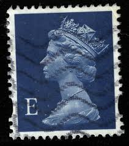 |
| HipStamp | Great Britain #627 3P Queen Elizabeth 2, Stamp used F-VF | Great Britain, General Issue Stamp / HipStamp | 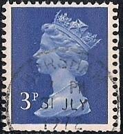 |
| HipStamp | Great Britain #500 5P Queen Elizabeth 2, used F-VF | Great Britain, General Issue Stamp / HipStamp | 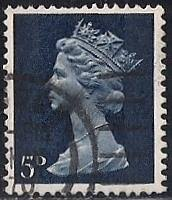 |
| HipStamp | Great Britain #500 5P Queen Elizabeth 2, used F | Great Britain, General Issue Stamp / HipStamp | 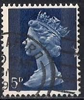 |
| HipStamp | Great Britain, Scott #MH8, used(o), 1968 Machin: Queen Elizabeth II, 5d, blue | Great Britain, Back of Book (Other) - Machin Head Stamp / HipStamp | 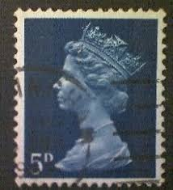 |
| HipStamp | GB Scotland SG S28 SC# SMH12 Used see details and scans | Great Britain, General Issue Stamp / HipStamp | 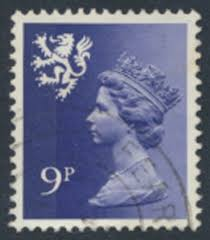 |
| Colnect | Stamp: Queen Elizabeth II - 5d Predecimal Machin (United Kingdom of Great Britain & Northern Ireland(Queen Elizabeth II - Predecimal Machin) Mi:GB 457,Sn:GB MH8,Yt:GB 477,Sg:GB 735,AFA:GB 457,Un:GB 477 📮 | 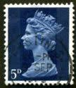 |
| EdinPhoto | Post Card History - Stamps on postcards sent to the UK | 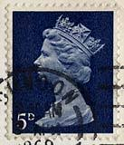 |
| HipStamp | Great Britain #627 3P Queen Elizabeth 2, Stamp used F-VF | Great Britain, General Issue Stamp / HipStamp | 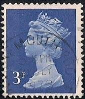 |
| eBay | Vintage Stamp MulticolorQueen Elizabeth | eBay | 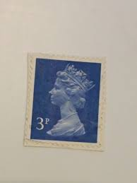 |
| HipStamp | Great Britain #MH16 1sh 6p Queen Elizabeth II | Great Britain, General Issue Stamp / HipStamp | 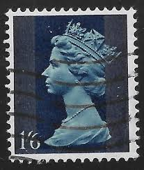 |
| eBay | Great Britain - 1971 - Queen Elizabeth II - 1P - Used - #13 | eBay | 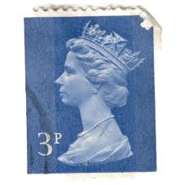 |
| Alamy | Two Penny Blue is a British postage stamp issued in 1840, following the Penny Black, featuring Queen Victoria, part of the MET collection Stock Photo - Alamy | 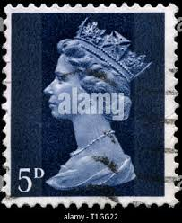 |
| eBay | Great Britain - 1971 - Queen Elizabeth II - 3P - Used - #46 | eBay | 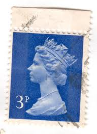 |
| eBay | Great Britain Scott #MH20 SG #789 Used | eBay | 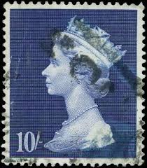 |
| HipStamp | Great Britain SG 831 Fine Used | Great Britain, General Issue Stamp / HipStamp | 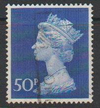 |
| Blogger.com | Filatelia: GBR - VEĽKÁ BRITÁNIA (GB) | 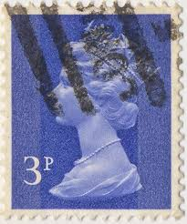 |
| Dreamstime.com | Isolated Great Britain Stamp Editorial Image - Image of england, historic: 383931945 |  |
| Dreamstime.com | 1,006 Envelope British Stamp Stock Photos - Free & Royalty-Free Stock Photos from Dreamstime | 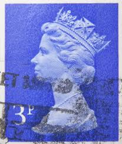 |
| eBay | Four Great Britain Stamps - King George V/Queen Elizabeth II; Used | eBay | 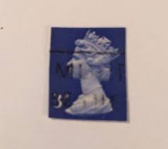 |
| Alamy | GREAT BRITAIN - CIRCA 2010: A used postage stamp from the UK, depicting an illustration of Wallace and Gromit singing Christmas Carols, circa 2010 Stock Photo - Alamy | 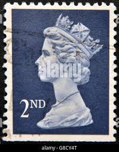 |
| Alamy | UNITED STATES - CIRCA 1971: stamp printed by United States of America, shows Sentry Box, Morro Castle, San Juan, circa 1971 Stock Photo - Alamy | 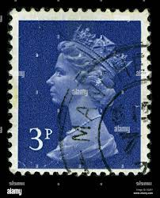 |
| Stamp Bears | Missing Color? 1/6 Machin Stamps Of Great Britain | Stamp Bears | 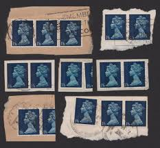 |
| HipStamp | Wales & Monmouthshire Stamp:1971-3 SC# WMMH1//16 very old used Stamps | Great Britain, Back of Book (Other) - Machin Head Stamp / HipStamp | 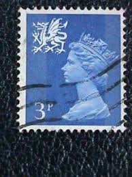 |
| eBay | Circus British Elizabeth II Stamps for sale | eBay | 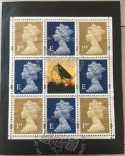 |
| HipStamp | Great Britain MH167 Queen Elizabeth II 1970 | Great Britain, Back of Book (Other) - Machin Head Stamp / HipStamp | 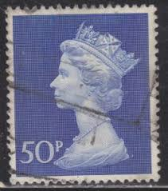 |
| ProBoards | Machin SW UV scans | The Stamp Forum (TSF) | 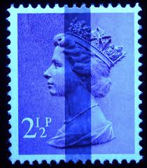 |
| eBay UK | VF (Very Fine) Great Britain Elizabeth II Machin Definitive Stamps for sale | eBay UK | 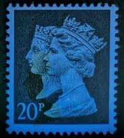 |
| Stamp Auction | Universal Philatelic Auctions Sale - 100 Page 690 | 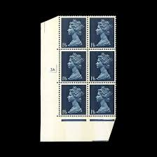 |
| eBay | Mint Never Hinged/MNH British Elizabeth II Stamps £ 2 Denomination for sale | eBay | 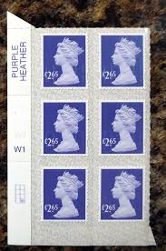 |
| Poshmark | Queen Elizabeth | Other | Rare Vintage Queen Elizabeth Blue 3p Collectible Stamp | Poshmark | 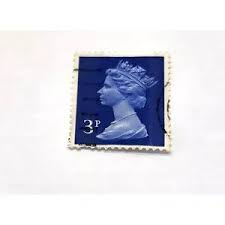 |
| eBay | Great Britain - 1967 - Definitives-Queen Elizabeth II - 1Sh 6P - Used - #1 | eBay | 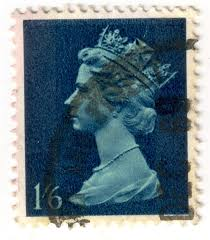 |
| eBay | UK - Wales - 1971 - Queen Elizabeth II - New Definitive Issue - 3P - #2582 | eBay |  |
| seemystamps.com | See My Stamps! - A Place to Show Off Your Stamp Collection | Page 72 | 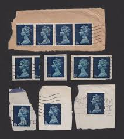 |
| eBay | Great Britain - 1971 - Queen Elizabeth II - 3P - Used - #48 | eBay | 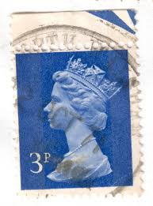 |
| eBay | Story Of Wedgwood Stamp Booklet Great Britain # BK144 FRESH FULL PERFS RARE Mint | eBay | 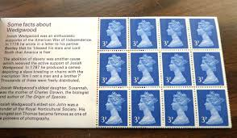 |
| HipStamp | G.B. 1971-96 QE II (Machins) 14p Grey/blue used | Great Britain, Stamp / HipStamp | 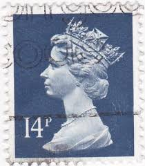 |
| eBay | Mint Never Hinged/MNH 5d Denomination British Elizabeth II Stamps for sale | eBay | 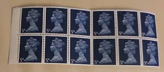 |
| Alamy | Postage stamp great britain queen hi-res stock photography and images - Page 15 - Alamy | 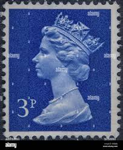 |
| Shutterstock | Great Britain Circa 1971 Stamp Printed Stock Photo 67738393 | Shutterstock | 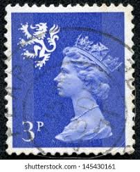 |
| Flickr | great predecimal stamp GB 5d UK Great Britain United Kingd… | Flickr | 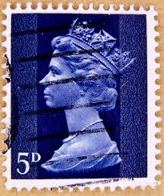 |
| eBay | Blue Pre-Decimal British Elizabeth II Stamps for sale | eBay | 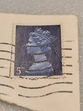 |
| norphil.co.uk | Norvic Philatelics Blog: Pictures of 30 essays and 42 stamps in Machin Anniversary Prestige Stamp Book | 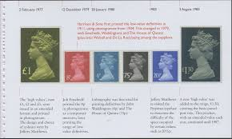 |
| Todocolección | gibraltar 1905 - michel nro. 17 - morocco agenc - Buy Antique stamps of United Kingdom on todocoleccion | 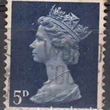 |
| ebid.net | JAPAN, Supreme Court, yellow 1997, 80 Yen on eBid United States | 190197446 | 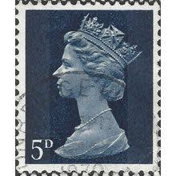 |
| Pngtree | طابع بريد بريطانيا العظمى ختم الطوابع صورة والصورة للتنزيل المجاني - Pngtree | 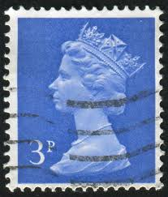 |
| eBay | Great Britain 1981 Yvert 980/91 Basic regionals Elizabeth II MNH VF | eBay | 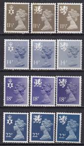 |
| Osta | Inglismaa Kuninganna Elizabeth II . Templiga. (222330507) - Osta.ee | 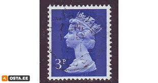 |
| eBay | Great Britain - 1971 - 3P - Queen Elizabeth II - #18269 | eBay | 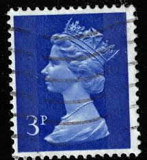 |
| Alamy | GREAT BRITAIN - CIRCA 1978: a stamp printed in the Great Britain shows Gold State Coach, 25th Anniversary of Coronation of Elizabeth II, circa 1978 Stock Photo - Alamy | 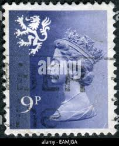 |
| Collect GB Stamps | High Value Definitives (1969) : Collect GB Stamps | 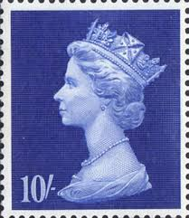 |
| Albany Stamps | Cylinder Blocks | GB Stamps | Albany Stamps | |
| eBay | Great Britain #MH20 Used WDW Philatelic (F8D) (9/24) | eBay | |
| Pinterest | Postage stamp design, Uk stamps, Anniversary postcard | ||
| Albany Stamps | High Value Machins (Incl. Castles) | GB Stamps | Albany Stamps | |
| eBay | Great Britain - 1970 - Queen Elizabeth II - 50P - Used - #05 | eBay | |
| vividagallery.com | United Kingdom Queen Elizabeth Machin Deep Orange Royal Profile Tapestry by Vivida Gallery - Vivida Gallery | |
| Albany Stamps | Celebrating 35 Years of British NVI Stamps | GB Stamps | Albany Stamps | |
| eBay | Great Britain - 1990 - 20P - Queen Victoria and Queen Elizabeth II - #18291 | eBay | |
| Flickr | meeannaatroca11 | Flickr |